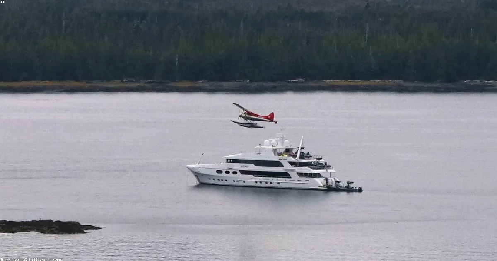

Comparativa detallada entre revestimientos cerámicos de última generación y métodos tradicionales de protección. Descubre por qué la tecnología cerámica es superior.

Durante décadas, los propietarios de embarcaciones han confiado en ceras, selladores y pulidos para proteger sus inversiones. Sin embargo, la tecnología de revestimiento cerámico ha revolucionado completamente el panorama de la protección marina, ofreciendo durabilidad y rendimiento sin precedentes.
| Característica | Cera/Sellador | Ceramic Coating |
|---|---|---|
| Durabilidad | 2-3 meses | 2-5 años |
| Resistencia Química | Baja (pH 5-9) | Alta (pH 2-13) |
| Dureza de Superficie | 2H-3H | 9H (nano-cerámica) |
| Hidrofobicidad | Moderada (90°) | Extrema (110-120°) |
| Protección UV | 30-40% | 95-99% |
| Costo Inicial | $50-100 | $800-2,500 |
| Costo Anual (5 años) | $600-1,200 | $160-500 |
El revestimiento cerámico es un polímero líquido compuesto de nanopartículas de dióxido de silicio (SiO2) y/o dióxido de titanio (TiO2) que crea un enlace molecular permanente con la pintura. Una vez curado, forma una capa protectora ultra-dura de 2-3 micrones de espesor.
Las ceras proporcionan brillo temporal pero carecen de durabilidad. En ambiente marino, la sal y temperatura degradan la cera en 4-6 semanas. Requieren reaplicación constante (cada 2-3 meses), lo cual es costoso en tiempo y dinero a largo plazo.
Los selladores acrílicos ofrecen mayor durabilidad que las ceras (3-4 meses) pero siguen siendo vulnerables a químicos marinos. No proporcionan protección contra rayado y su hidrofobicidad disminuye rápidamente con exposición al sol tropical.
El pulido elimina capas microscópicas de clear coat cada vez que se aplica. Realizarlo frecuentemente puede adelgazar el clear coat hasta el punto de requerir repintado completo (típicamente después de 10-15 pulidos agresivos).
En Cartagena, las condiciones marinas son especialmente exigentes. La sal actúa como catalizador de oxidación, acelerando el deterioro. Los rayos UV a 11° de latitud tienen intensidad máxima. Humedad relativa del 80-90% crea ambiente ideal para corrosión.
A diferencia de la cera que cualquier persona puede aplicar, el ceramic coating requiere instalación profesional certificada. Las etapas incluyen:
Evaluaremos tu embarcación y recomendaremos el sistema cerámico ideal para tus necesidades. Instalaciones en ambiente controlado en Cartagena de Indias.
Agendar InspecciónUtilizamos sistemas certificados marinos de Gyeon Marine, Ceramic Pro 9H, y Gtechniq Marine. Cada sistema ofrece diferentes niveles de dureza (7H-10H), hidrofobicidad (110-120°) y durabilidad (2-5 años con garantía escrita).
Uno de los mayores beneficios es el mantenimiento simplificado. Solo requiere lavado con jabón pH neutro cada 2-3 semanas, enjuague con agua dulce después de navegación en agua salada, y aplicación opcional de spray booster cada 3-6 meses para máximo brillo.
Elige Cera/Sellador si: Tu embarcación es de uso esporádico (menos de 10 días/año), tienes presupuesto limitado, disfrutas el proceso de detailing manual, o planeas vender en menos de 1 año.
Elige Ceramic Coating si: Usas tu yate regularmente, buscas máxima protección contra ambiente marino, valoras tu tiempo, quieres garantía escrita de durabilidad, o planeas mantener la embarcación por 3+ años.
Aunque el costo inicial del ceramic coating es mayor, el retorno de inversión es indiscutible. En 5 años, ahorrarás entre $2,000-4,000 en productos y mano de obra comparado con mantenimiento tradicional. Más importante aún, preservarás el valor de reventa de tu embarcación manteniendo la pintura en condición prístina.
La tecnología cerámica representa la próxima generación de protección náutica. En el ambiente marino exigente de Cartagena, no es solo una mejora incremental sobre métodos tradicionales—es un salto tecnológico que redefine lo que significa proteger una inversión marina.
Especialistas en protección y restauración náutica